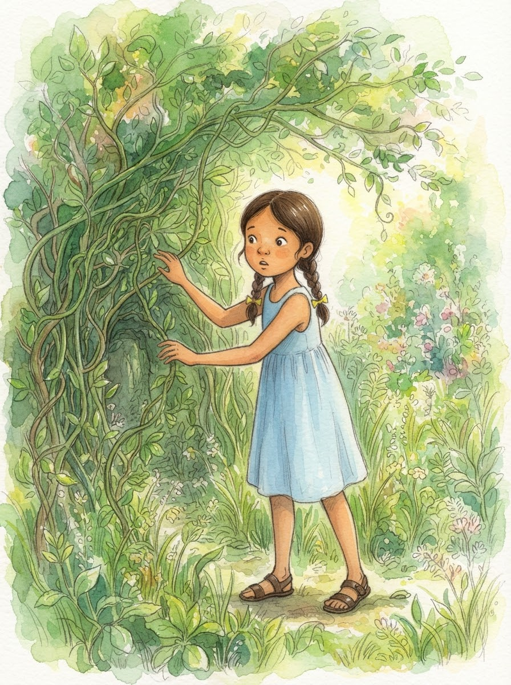
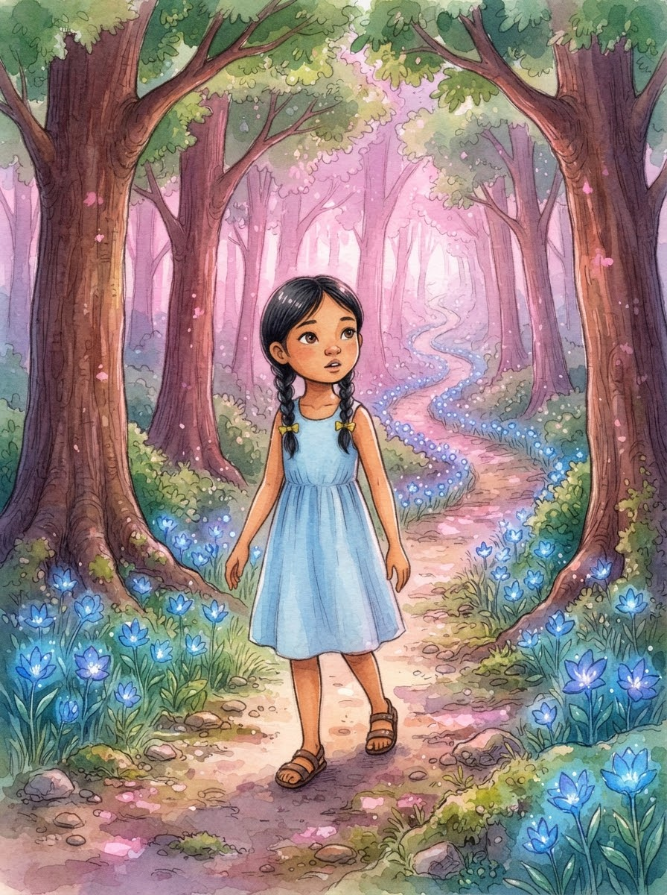
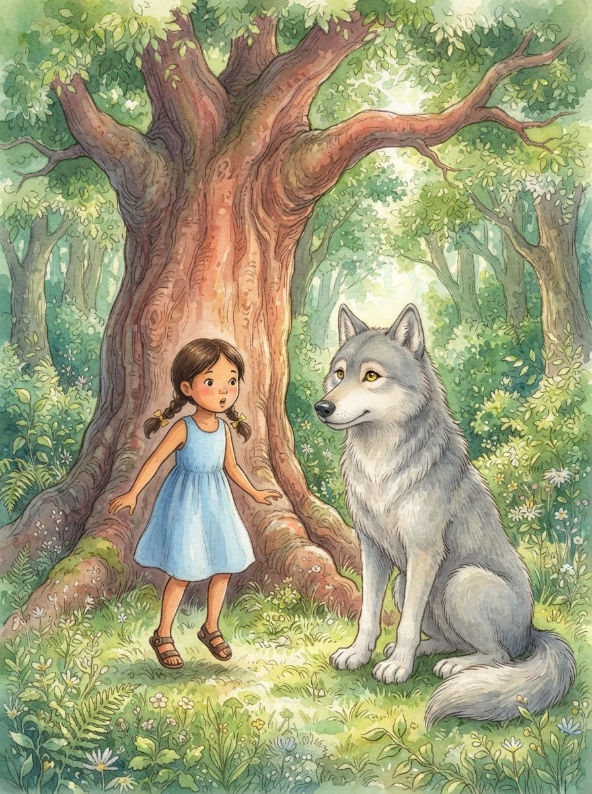
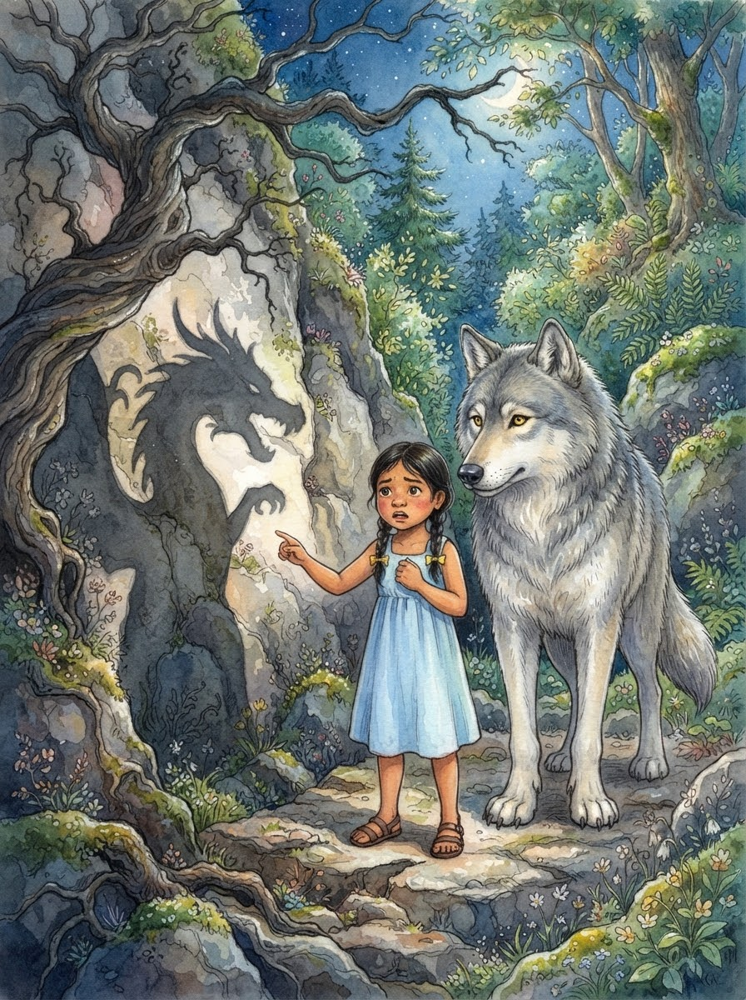
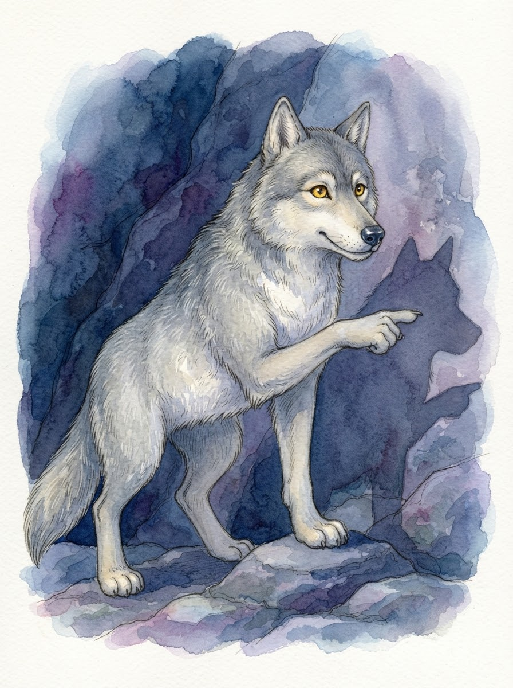
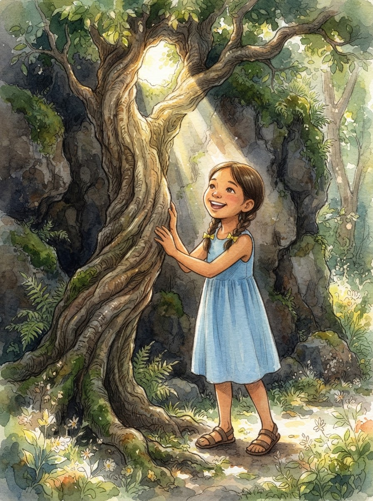
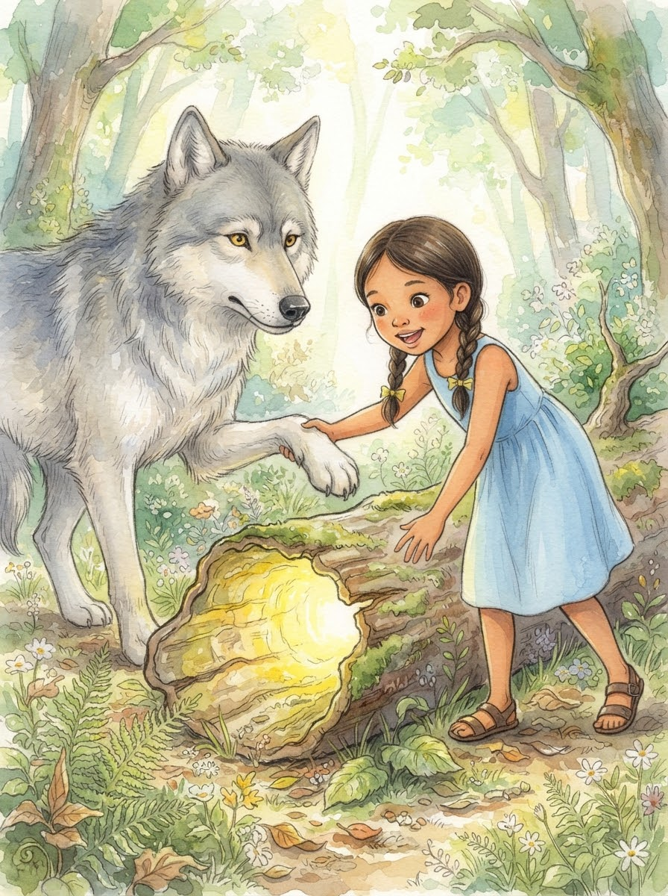
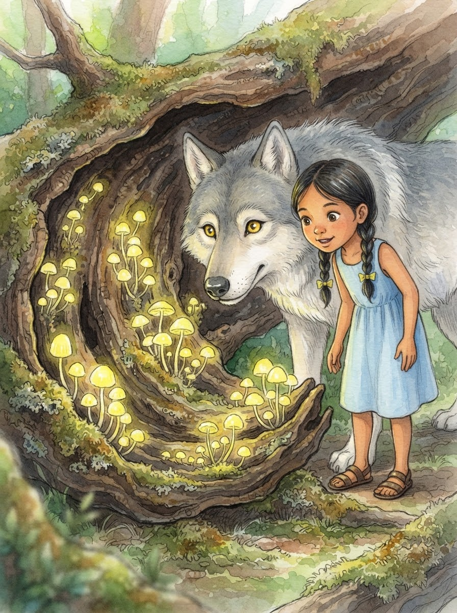

Si Angel at ang Landas ng Pag-uusisa

Si Angel at ang Landas ng Pag-uusisa. Sa likod ng hardin ni Angel, sa gitna ng matatayog na damo at makakapal na baging, ay may isang pintuang matagal nang nakatago. Kulay luntian ito at tila gawa sa mga buhay na sanga. "Saan kaya ito papunta?" tanong niya sa sarili habang dahan-dahang hinahawi ang mga dahon. Hindi siya sigurado kung dapat ba siyang pumasok, pero nanaig ang kanyang kuryosidad.

Pagkapasok ni Angel, bumadya ang isang mahiwagang landas. Ang mga bulaklak dito ay tila kumukutitap, at ang mga puno ay bumubulong sa ihip ng hangin. Habang naglalakad, may narinig siyang kaluskos sa likod ng isang malaking puno ng narra. Kinabahan siya. Naalala niya ang mga kuwento tungkol sa mga mababangis na hayop sa gubat.

Biglang lumitaw ang isang malaking lobo na may kulay-abong balahibo at matatalas na mata. "Aaah! Lobo!" sigaw ni Angel habang nagtatangkang tumakbo. Ngunit bago pa siya makahakbang, nagsalita ang lobo sa isang malumanay na tinig. "Huwag kang matakot, bata. Ako si Mulat. Bakit ka agad tumatakbo nang hindi mo pa ako kilala?"

Huminto si Angel at lumingon. "Sabi kasi sa mga libro, ang mga lobo ay masama at nambibiktima ng mga bata," paliwanag niya. Ngumiti si Mulat. "Iyan ang unang aral, Angel. Huwag mong paniwalaan agad ang lahat ng naririnig o nababasa mo nang hindi mo sinusuri. Bakit hindi mo muna ako tanungin bago ka magpasya kung sino ako?"

Nagpatuloy sila sa paglalakad hanggang sa makarating sa isang madilim na bahagi ng landas. Biglang may nakitang malaking anino si Angel sa pader ng isang bato. "Naku, Mulat! Isang higante! May malalaki siyang sungay at mahahabang kamay!" bulong ni Angel na nanginginig sa takot. Ayaw na niyang humakbang pa dahil sa nakita.

Tumigil si Mulat at tiningnan ang anino. "Iyan ba ang nakikita mo? O iyan lang ang akala mong nakikita mo?" tanong ng lobo. "Bago ka matakot, subukan nating siyasatin kung ano talaga ang pinagmumulan ng aninong iyan. Gamitin mo ang iyong mga mata at magtanong: 'Ano nga ba talaga iyan?'"

Nilapitan nila ang pinagmumulan ng anino. Laking gulat ni Angel nang makitang isa lamang pala itong luma at baluktot na puno na may mga nakabiting baging. Dahil sa tama ng liwanag mula sa isang butas sa mga dahon, nagmukha itong higante. "Hala! Puno lang pala siya!" tawa ni Angel. Napagtanto niya na nalinlang siya ng kanyang sariling takot.

Maya-maya, nakakita sila ng isang baul na tila puno ng kumikinang na ginto sa loob ng isang guwang na troso. "Mulat, tingnan mo! Kayamanan! Pwede ko ba itong kunin?" sabik na tanong ni Angel. Akmang kukunin na niya ang mga "ginto" nang pigilan siya ni Mulat. "Teka muna, Angel. Magtanong ka muna: 'Bakit ito nandito? Totoo bang ginto ito?'"

Sinuri nilang mabuti ang loob ng troso. Hindi pala ginto ang nakita nila, kundi mga mahiwagang kabute na naglalabas ng matingkad na dilaw na liwanag. "Kung kinuha mo agad, baka nasira mo ang mga halaman o baka nakalalason pala ang mga ito," paalala ni Mulat. Namangha si Angel sa ganda ng mga kabute na hindi niya napansin noong una dahil sa akalang ginto ang mga ito.

Dumating na sila sa dulo ng landas, pabalik sa pinto ng kanyang hardin. "Salamat, Mulat. Itinuro mo sa akin na hindi lahat ng nakikita o naririnig ay dapat paniwalaan agad," sabi ni Angel. Mula noon, bago maniwala sa anumang bagay, laging itinatanong ni Angel ang "Bakit?" at "Paano?". Alam na niya na ang pag-uusisa ay ang susi sa tunay na kaalaman.